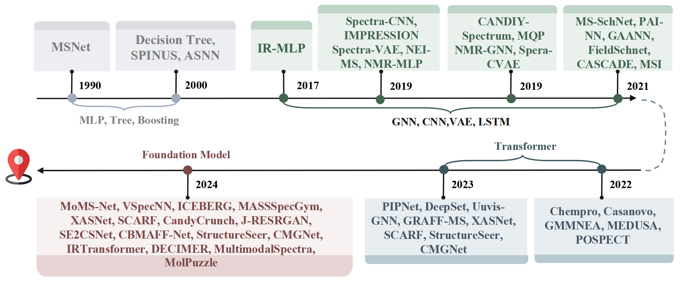
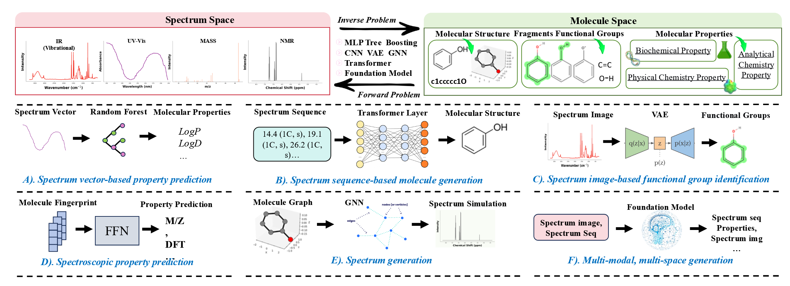

随着人工智能（AI）和机器学习（ML）的蓬勃发展，它们正在为化学领域带来前所未有的变革。从分子属性预测到反应建模，AI正在显著提升科学家的研究效率和创新能力。然而，谱学领域的AI应用——尤其是谱学机器学习（SpectraML）——依然处于相对早期阶段，未完全释放其潜力。谱学技术，如质谱（MS）、核磁共振（NMR）、红外（IR）等，生成的数据越来越复杂，传统的手工分析方法已经无法应对庞大的数据量和复杂性。
背景：AI如何改变谱学分析的游戏规则
谱学，作为分析物质与电磁辐射相互作用的研究方法，广泛应用于化学、生命科学等领域。现代谱学技术（如质谱、红外、核磁共振等）通过提供高分辨率的分子结构信息，已成为化学研究的核心工具之一。然而，随着数据量的急剧增加，传统的人工分析方法已经难以应对这种高维数据的复杂性。在这种背景下，谱学机器学习（SpectraML）应运而生，利用AI算法有效处理和分析谱学数据，开辟了新的研究路径。
该论文的提出，正是基于谱学数据处理和分析的巨大需求，它详细阐述了谱学机器学习的前沿技术及其应用，回顾了从早期的模式识别到如今的复杂推理模型的演变过程，为谱学与AI的结合指明了方向。

ML进展时间表及其在光谱研究中的应用。左：分子到光谱，右：光谱到分子
论文贡献：谱学机器学习的技术演变与创新
这篇论文系统地回顾了SpectraML的最新进展，涵盖了从分子到光谱的预测（正向问题）和从光谱到分子的推断（逆向问题）两个方面。论文不仅提供了统一的方法框架，还详细讨论了数据表示、预处理策略以及各种机器学习模型的应用。
- 统一框架：论文将五种主要的光谱技术（质谱、核磁共振、红外光谱、拉曼光谱和紫外-可见光谱）纳入一个统一的方法框架，强调了正向和逆向任务的区分。
- 历史演进：论文追溯了ML在光谱学中的应用历史，从早期的模式识别到现代的生成模型和推理框架，为研究人员提供了全面的历史背景。
- 挑战与机遇：论文指出了SpectraML面临的关键挑战，如数据质量、多模态集成和计算可扩展性，并提出了新兴方向，如合成数据生成、大规模预训练和少样本学习。

⬆️（上）SpectraML概述，在光谱空间和分子空间之间转换。（中间和底部）SpectraML中关键任务的图示，包括它们的输入、输出以及用于映射它们的机器学习模型，如随机森林、前馈网络（FFN）、变分自编码器（VAE）、变换器、图神经网络（GNN）和基础模型。
📊 前向问题：从分子到光谱的预测
前向问题是指根据已知的分子结构预测其光谱特征。AI技术的进步使得这一任务从传统的实验和计算方法转向高效的机器学习模型。通过图神经网络（GNN）和基于Transformer的深度学习模型，AI能够基于分子的2D图结构或者3D坐标预测其在不同谱学技术下的光谱响应。这一技术不仅提高了预测的速度和准确性，也使得一些难以通过实验获得的分子特征得以模拟。
🔄 逆向问题：从光谱到分子的推导
逆向问题是指从实验获得的光谱数据中推导出分子结构。AI在这一领域的应用，尤其是基于生成模型的技术，已经取得了突破性进展。通过Transformer等深度生成模型，AI能够将NMR或IR等谱学数据转化为分子图或SMILES字符串，极大地加速了分子结构的解码过程。这一进展不仅加速了药物发现、天然产物的鉴定，还为新材料的设计提供了强有力的支持。
🌐 跨模态集成与基础模型的突破
近年来，随着基础模型的发展，AI在谱学中的应用进入了一个新的阶段。这些模型通过跨领域的学习，能够同时处理多种类型的光谱数据，并进行少样本或零样本学习，显著提高了数据稀缺情况下的模型表现。AI通过集成不同谱学数据类型，如IR、NMR、MS和拉曼光谱，能够提供更为全面的分子结构预测和光谱分析。
技术分析：深入理解谱学机器学习的核心原理与应用
谱学机器学习的核心在于如何有效地利用谱学数据进行前向任务和逆向任务的建模。通过AI，化学家可以从不同的光谱数据中提取关键信息，为分子识别、反应路径预测等提供深刻的洞察。
🔍 前向问题的解决：
AI在前向问题中的应用，不仅限于简单的光谱预测，还扩展到了更复杂的任务，如反应行为预测和分子特性提取。图神经网络（GNN）和物理信息神经网络（PINN）等深度学习技术，能够捕捉分子结构中的重要化学信息，从而为不同谱学技术下的光谱特征预测提供支持。以下是前向问题的主要技术路线：
- 图神经网络（GNN）：有效捕捉分子图中的局部和全局特征，实现精准的光谱预测。
- 物理信息神经网络（PINN）：结合量子化学计算和实验数据，预测关键的光谱属性，如极化率和化学位移。
🔄 逆向问题的解决：
AI在逆向问题中的作用则更为复杂，它不仅需要从光谱数据中提取特征，还需要在大量可能的分子结构中进行推理和匹配。基于Transformer的生成模型和深度生成模型，能够实现从光谱到分子的高效推导。关键技术包括：
- 生成模型（GANs）：用于生成高质量的光谱数据，帮助解决数据稀缺问题。
- Transformer：将光谱信号转化为分子结构的编码，处理复杂的光谱模式。
挑战与机遇：谱学机器学习的未来发展
尽管AI在谱学中的应用展示了巨大的潜力，但仍面临诸多挑战。首先，数据质量和稀缺性是AI模型训练中的主要障碍。实验数据常常受到噪声、基线漂移等问题的影响，这使得训练模型的难度增大。其次，如何高效整合多模态谱学数据，仍然是一个亟待解决的问题。
这些挑战也带来了新的机遇：
- 合成数据生成：通过AI生成高保真光谱数据，弥补实验数据的不足。
- 基础模型：预训练模型能够处理复杂的推理任务，如光谱解卷积和峰分配。
- 物理信息方法：将化学和物理规则嵌入模型，提高生成结果的合理性和可解释性。
结语：AI驱动下的化学新纪元
谱学机器学习无疑是化学研究未来发展的重要方向。随着技术不断进步，AI不仅能够帮助科学家们高效分析复杂的光谱数据，还能推动药物发现、环境监测、材料设计等领域的突破。正如论文所展示的，这场革命不仅仅是技术的进步，更是人类对物质世界理解的一次飞跃。